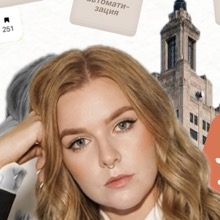
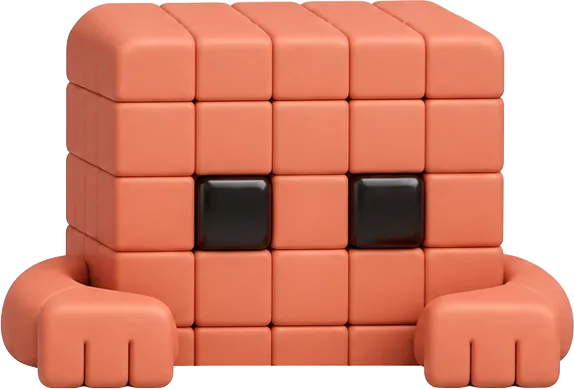
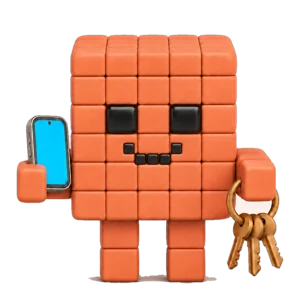
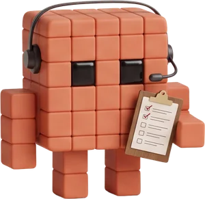
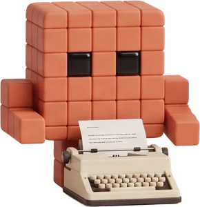
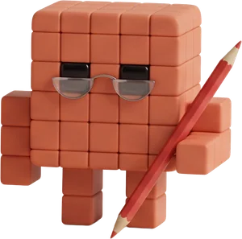
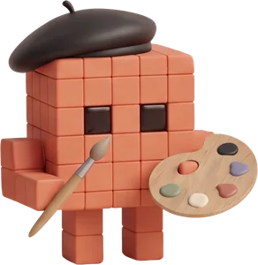
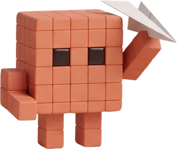
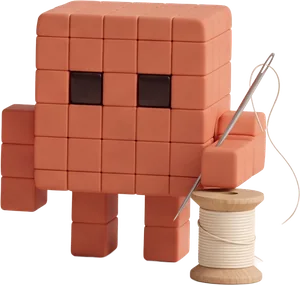
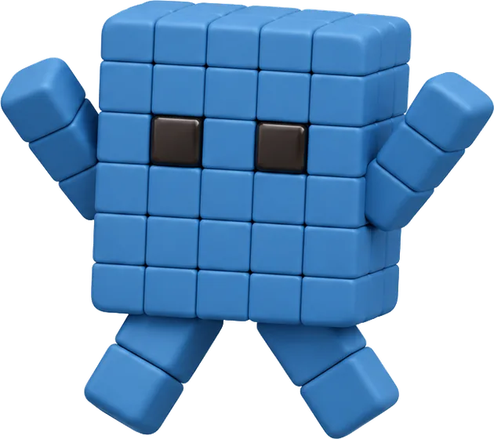

Диана Миронова @mironova.dii Промты по шагам ↓Это мой раздел «Здоровье» в личном кабинете: меню, тренировки, отметки дня и вес в одном месте. Его собрал Claude по моим анализам, меню и плейлисту тренировок. Здесь рассказываю, где держать такое приложение и как собрать своё.
Каждый день отмечаю еду, воду, тренировку и всё, что назначил врач. Одно касание, и галочка стоит.
В норме. Поддерживающая доза до весны, пересдать в марте.
Данные на экране вымышлены
Одна и та же страница открывается тремя способами. Выбери тот, которым будешь пользоваться чаще, или поставь все три.
Приложение открывается отдельным окном без вкладок браузера и запускается из Dock или меню «Пуск».
Можно и без ссылки: попроси Claude сохранить приложение файлом на рабочий стол. Оно откроется двойным щелчком, но будет жить только на этом компьютере.
Приложение открывается на весь экран, без адресной строки, и стоит среди остальных иконок.
Чтобы приложение открывалось без адресной строки и со своей иконкой, его нужно подготовить. Это делает промт из шага 4.
Приложение открывается кнопкой прямо в чате с ботом, на телефоне и на компьютере. Ставить ничего не нужно.
Claude + Codex OS 2.0 · модуль 7Мини-приложение в Telegram мы собираем на практикуме, в модуле 7 тарифа PRO.
ПрисоединитьсяГалочки, вес и замены блюд должны где-то жить. Вариантов два.
Самый простой вариант, сервер не нужен. Отметки сохраняются в том браузере, где ты их ставишь, поэтому у телефона и компьютера они свои.
Отметки лежат на сервере за паролем, и телефон с компьютером показывают одно и то же. Claude поможет и с этим, когда первая версия заработает.
так у меняЧетыре шага. Первая версия появится после первого промта, дальше доводишь её правками своими словами.
Я написала так: «минималистичное, можно ненавязчивый градиент и жидкое стекло, как у Apple». Этого хватило, чтобы Claude попал в настроение.
Скопируй, впиши своё вместо подсвеченного и приложи к сообщению скриншоты и файлы.
Собери мне личное приложение «Здоровье» одной HTML-страницей. Что в нём: отметки дня, меню на неделю с заменой блюд, тренировки из плейлиста, вес с графиком. Мои данные: прикладываю файлы и пишу ниже. Как выглядит: смотри скриншоты-референсы. Возьми из них настроение и приёмы, вид собери свой. Настроение: минимализм, мягкий градиент, стекло как у Apple. Как работает: удобно открывать и с телефона, и с компьютера, отметки сохраняются и не пропадают после закрытия. Если чего-то не хватает, сначала задай мне вопросы. Потом покажи первую версию.
Открой первую версию на компьютере и на телефоне. Правки пиши так, как сказала бы подруге. Вот какие давала я:
Когда приложение нравится, попроси Claude выложить его по ссылке. Бесплатный вариант для начала — GitHub Pages.
Подготовь приложение к выкладке на GitHub Pages. Добавь иконку, название и всё нужное, чтобы с телефона его можно было поставить на экран «Домой», а с компьютера установить отдельным окном, и чтобы оно открывалось без адресной строки. Проверь, что в самой странице нет моих личных данных. Объясни по шагам, как выложить, если у меня ещё нет аккаунта на GitHub.
Если нужно ещё и в Telegram, добавь к промту
Сделай, чтобы приложение открывалось как мини-приложение Telegram из моего бота @имя_бота: подстрой его под тему и размеры Telegram и скажи, что настроить в @BotFather.

Второй поток идёт с 25 ноября по 15 декабря, места открыты до 2 декабря. Что будет на практикуме:







Для этого у меня есть отдельное предложение, VIP. В нём всё из PRO, моя команда из десяти нейросотрудников и две личные консультации, на которых мы подстроим её под твой блог.
Жду тебя на практикуме, до встречи.
